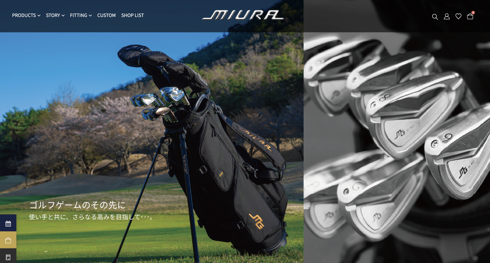
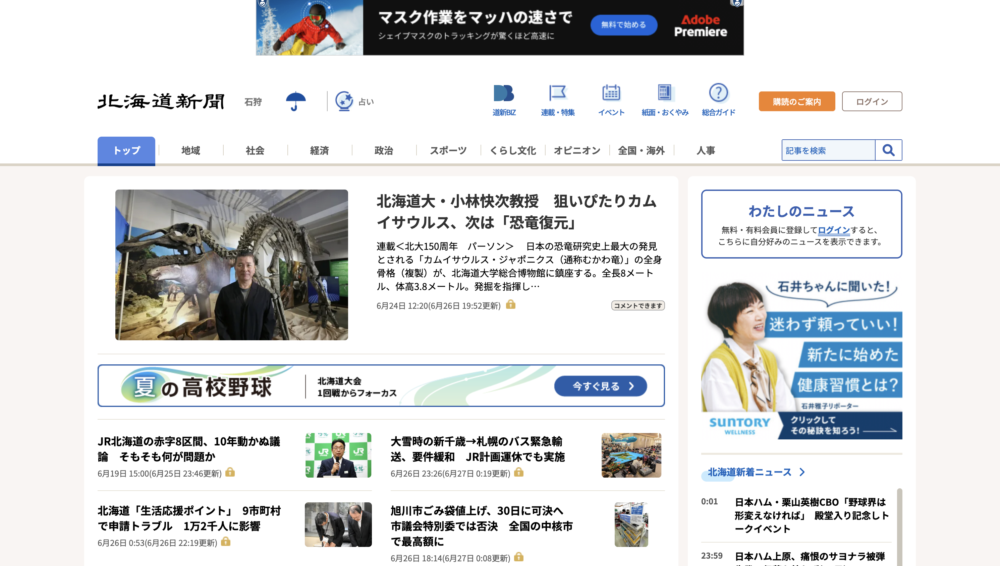
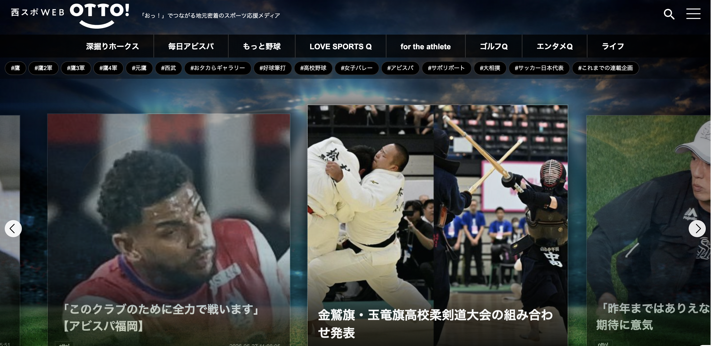
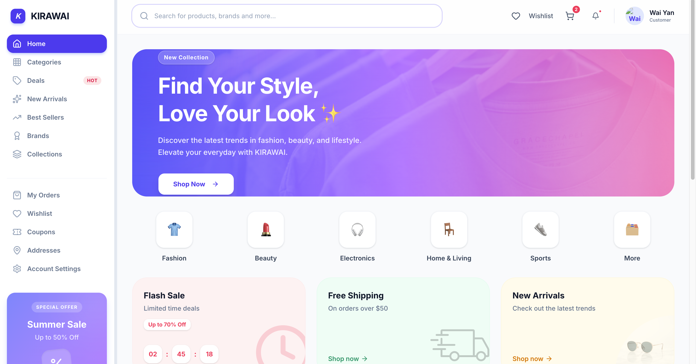

My Project Showcase
Full-stack web applications built with PHP (Laravel) as the core backend, along with MySQL, React, and Next.js, covering scalable management systems, CMS platforms, and an e-commerce solution, designed with maintainable architecture and real-world business use cases.

Golf Club Fitting Management System
Participated in the development of a Golf Club Fitting Management System using Laravel. Contributed to customer management, fitting history, store management, authentication, and search features. Collaborated with team members in Vietnam to coordinate development tasks, clarify requirements, and ensure smooth project delivery.

Hokkaido-CMS
This content management system (CMS) was developed collaboratively by our team. My responsibilities included implementing Advertisement Management, Media Upload functionality, and Rich Text Editor integration, as well as contributing to feature enhancements, system maintenance, and bug fixes.

NISHISPO-CMS
This CMS for event photo and album management was developed collaboratively by our team. My responsibilities included implementing a multi-photo upload feature, developing AJAX-based form handling with PHP backend integration, improving event photo list pagination, adding CSV export functionality with backend support, and creating a download management page. I also performed testing, debugging, and UI enhancements.
.png?height=300&width=300)
Worker Management System
PHP-based job management system with pure PHP implementation for efficient workforce coordination and task tracking. Features include employee scheduling, time tracking, task assignments, and automated reporting capabilities. Built with a focus on security and scalability.

Kirawai Shopping
I developed a full-stack admin management system using Laravel and Next.js. The system includes user authentication, role-based access control, content management, media upload, and real-time updates within a centralized dashboard. It is designed with a scalable architecture, with future plans to extend it into a full e-commerce system.